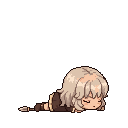
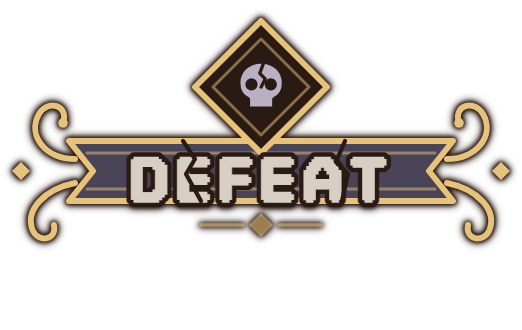

① 보스 실패 순간: 흑백 + 빨간 테두리, 문장이 떨어지며 흔들림


시간 초과
② 실패 결과: 이유 + 강해지는 방법
보스 · 해초 슬라임 왕
시간 초과 · 남은 체력 38%
이렇게 강해질 수 있어요
골드 강화
공격력 Lv.13 → 강화 가능
이동
후드 먹이기
Hood_Exp 34개 보유
이동
장비
더 좋은 장비가 있어요
이동
확인
③ 일반 스테이지에서 쓰러짐: 가벼운 판, 자동 다시 시작
Lv.1
소라게 소녀
137
0
자동 전투
Stage 1-7
6/10
보스 도전
자동
2.9
성장
인벤토리
스킬
미션
컨텐츠
상점
쓰러졌어요
잠시 뒤 다시 일어나요
3초 뒤 다시 시작